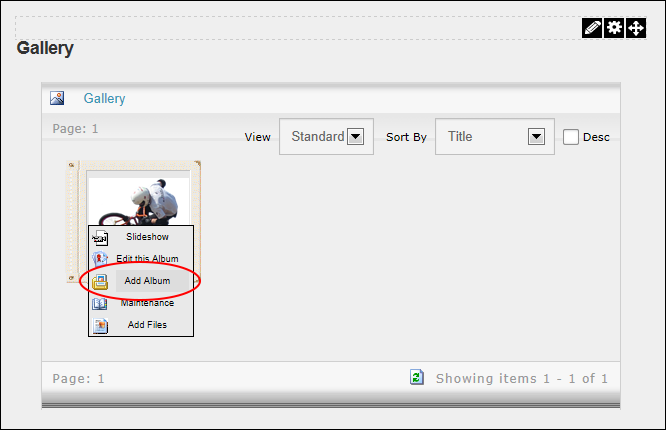
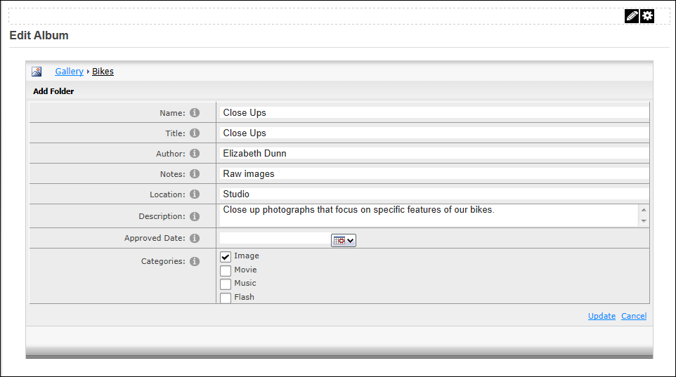
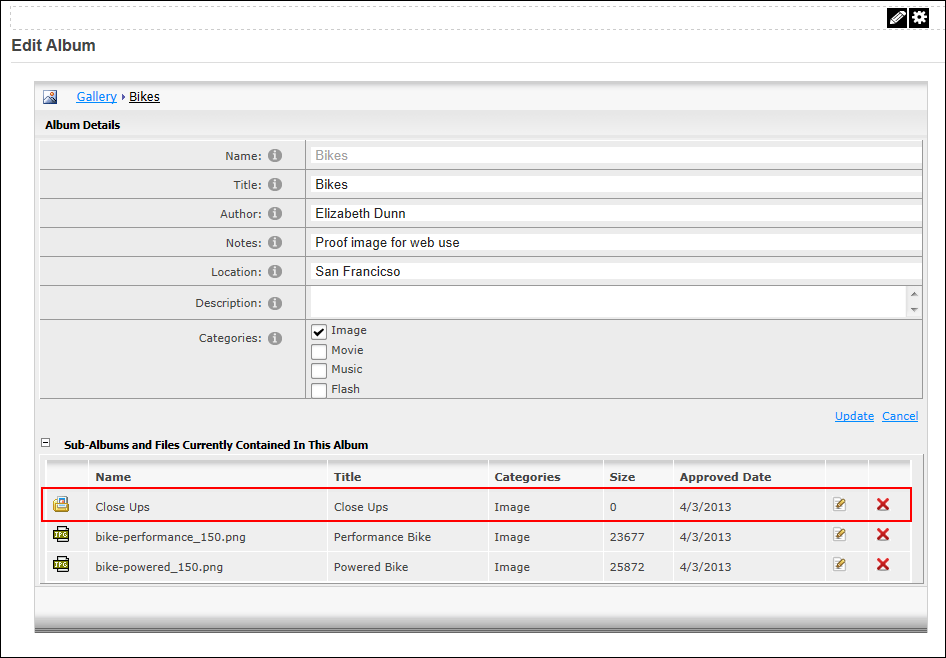

Adding a Sub-Album
Module Editors can add a sub-album (also known as a child album) to an album on the Gallery module.
- Navigate to the parent album for this new album and then open the album menu. See "Opening the Album Menu"
- Select Add Album from the album menu.

- In the Name text box, enter a name for the album using plan text. E.g. Close Ups. Note: This field cannot be edited.
- At Categories, select the media categories to be added to this album.
- The following optional settings are also available:
- In the Title text box, enter a title for the album.
- In the Author text box, enter a name for the author of the images.
- In the Notes text box, enter any notes about this gallery.
- In the Location text box, enter the location where the media was taken.
- In the Description text box, enter a description of this gallery.
- At Approved Date, click the Calendar button and select the date when the album will be visible to authorized users. See "Working with the Calendar"

-
Click the Update button. The child album is now in the Sub-Albums and Files Currently Contained In This Album section at the base of this page.
- Click the Cancel button to return to the page.

A Newly Added Child Album (Sub-Album)